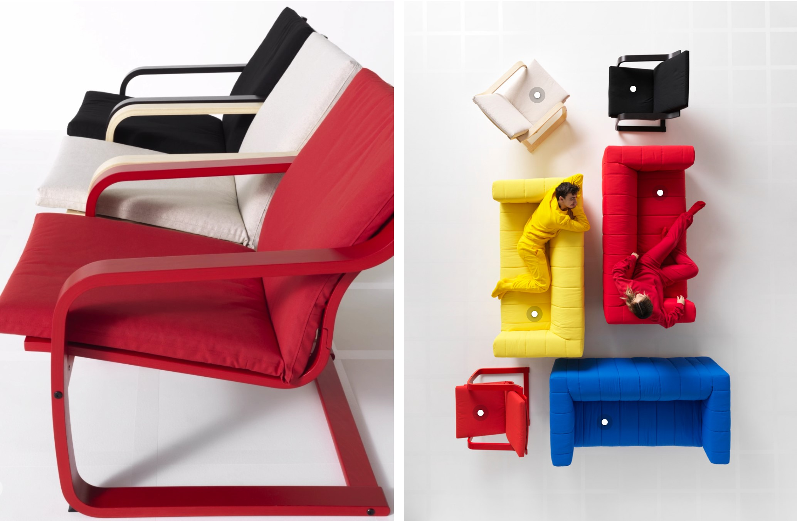

在 Nytillverkad
中，我們持續發掘過去的經典款，同時加以優化以符合現代人的生活需求。一起來看這些經典款！設計師
Noboru Nakamura 創造的 POÄNG 扶手椅和 KLIPPAN 沙發，歷經 40
多年依舊受人喜愛。新款有著低椅背和大膽椅面，呈現更俐落有型的新面貌！
持續進化的經典款
KLIPPAN
沙發在1984年的型錄首次亮相，現在更以趣味外型重新回歸；加上有著全新低椅背設計的
POÄNG 扶手椅，一同向經典致敬。Nytillverkad
系列邀請到當年操刀的日本設計師 Noboru Nakamura
重新設計和更新，以其流行色調、俐落直線和簡約風格，重返充滿自信活力的
80 年代。
